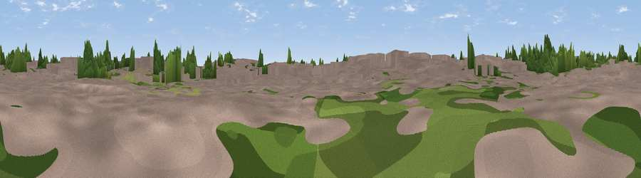

Viewpoint near Oxford
#44503 in England · top 94% of its area beats it · near Oxford · path 110 mWhere it is
The exact computed spot (SP 51559 06368). Click the marker for map links.
Public access: the nearest public right of way is about 110 m away — the final stretch may cross private land. Computed from Natural England's CRoW access layer and OpenStreetMap rights of way — not the legal definitive map. Always verify locally.
The view, rendered

A 360° render of this exact spot computed from the terrain model, tree cover and land cover — summer colours, afternoon light, calibrated against photographs of famous viewpoints. Real trees, hedges and buildings will differ in detail.
The panorama
Grey silhouette: terrain skyline in each direction (720 bearings, Earth curvature and refraction included). Dashed green: skyline with trees (+15 m) and buildings (+8 m) as obstacles. Blue strip: how far the ground is visible on each bearing.
Where the view opens
Wedge length = distance to the farthest visible ground on that bearing (vegetation-aware). Rings at 10, 25 and 50 km.
What fills the view
38% built-up · 35% woodland · 21% grassland · 6% cropland
Angular shares of the visible panorama (visual magnitude), not map area. Landscape diversity 0.54 (0–1 Shannon).
Key numbers
More beautiful places nearby
The staircase of upgrades: each row has a higher view potential than everything closer. Driving times are estimates from straight-line distance, calibrated against real road routing — check an actual route before setting out.
| Place | Direction | Drive | Score |
|---|---|---|---|
| Viewpoint near Oxford | E · 2 km | ~5 min | 17.9 |
| Millennium Beacon | WSW · 4 km | ~9 min | 47.1 |
| Thorn Hill | E · 6 km | ~12 min | 54.1 |
| Viewpoint near Swinford | WNW · 7 km | ~14 min | 64.2 |
| Round Hill | SSE · 15 km | ~26 min | 70.1 |
| Viewpoint near Watlington | SE · 23 km | ~37 min | 70.6 |
| Viewpoint near Lewknor | ESE · 23 km | ~37 min | 70.8 |
| Viewpoint near Lewknor | ESE · 23 km | ~38 min | 74.4 |
51.75364, -1.25448 · source: osm viewpoint · position refined by local search. Computed location — check access rights before visiting.